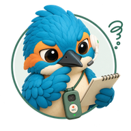
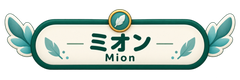
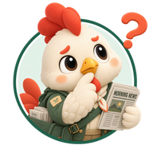
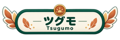
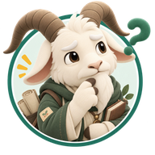
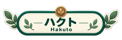

この記事は表示確認用のテストです。正式なサービス案内やニュースではありません。
タグの反映確認
ChatGPT・業務整理・表示確認テストの3つのタグを設定しています。コラム一覧のタグ表示と絞り込みを確認します。
アイキャッチの反映確認
既存のToToNoE+画像をアップロードし、一覧と記事冒頭の表示を確認します。
- 見出しと段落
- 太字と箇条書き
- 一覧から記事を開く導線


ここに会話文を入力します。


ここに会話文を入力します。


ここに会話文を入力します。
。